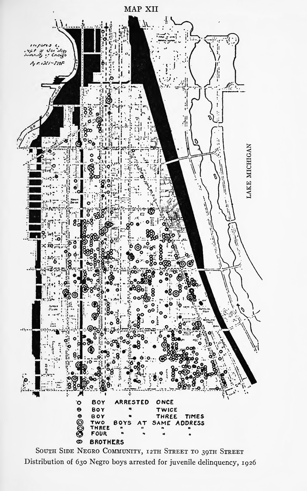
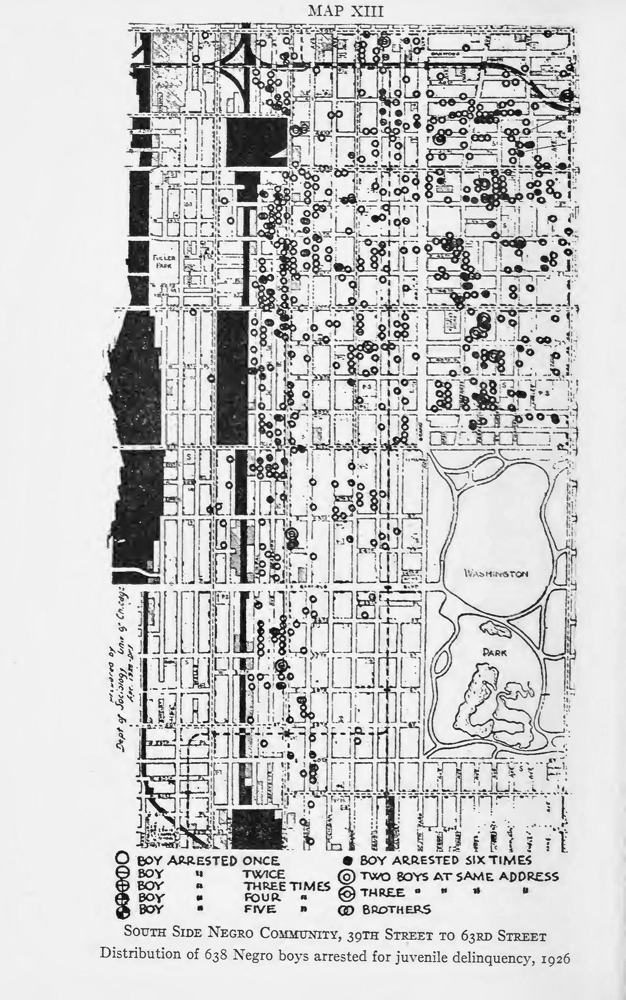

The Negro Family in Chicago, 1932, Chapter X, pp. 204–219. PDF
204 When we turn to the study of juvenile delinquency we find, as in the case of desertions and illegitimacy, that Negroes furnish a disproportionate number of cases in most cities for which statistics are available. In New York City the proportion of Negro children arraigned in the Children’s Court increased from 4.2 per cent in 1919 to 8 per cent in 1925, although the Negro population was only 2.7 per cent of the total in 1920.1 In Indianapolis, Gary, and Dayton the proportion of Negro cases was from three to four times as large as their relative numbers in the population. Likewise, in three southern cities, Richmond, Memphis, and Charleston, South Carolina, Negroes furnished about one and a half times as large a proportion of the delinquency cases as their relative numbers in the population of these cities.2
Juvenile delinquency among the Negroes of Chicago has shown the same tendency as in other northern cities. Since 1900 there has been an increase in the proportion of Negro cases. This increase has been most marked since the migrations from the South during and since the World War. In 1925 nearly a fifth of the boys and girls brought into the Juvenile Court were Negroes. Not all of the cases of juvenile delinquency were brought into the court. In 1926 there were 1,322 Negro boys arrested for juvenile delinquency, 205 although only 320 cases were taken to the court. In 1927 the number of arrests had increased to 1,503.3
The increase in the number of Negro delinquents has followed the movement of the Negro population into the areas which have been characterized by a high delinquency rate. Clifford R. Shaw says in this connection:
The white Protestants, most of whom are native born, have in the process of the growth of Chicago, gradually moved out of the areas of deterioration where the rate of delinquency is high. The Negro on the 206 other hand, because of his lower economic status, has tended to move into the area of deterioration near the “Loop,” thus supplanting to a certain extent the white Protestant population in this area. The increase in the percentage of the Negro cases brought to court may be due to some extent to the type of area in which this racial group is forced to live.4
TABLE XX. Percentage of Negro Cases in the Total Number of Delinquent Boys and Girls Brought before the Juvenile Court during Each Fifth Year, 1900-19305
| Year | 1900 | 1905 | 1910 | 1915 | 1920 | 1925 | 1930 |
|---|---|---|---|---|---|---|---|
| Boys | 4.7 | 5.1 | 5.5 | 6.2 | 9.9 | 17.1 | 21.7 |
| Girls | 11.0 | 5.8 | 8.1 | 13.8 | 20.7 | 18.2 | 20.9 |
The high delinquent rate which has characterized the area near the Loop, where a large part of the Negro population has found a foothold in the city, has existed over a period of thirty years “notwithstanding the fact that the [racial] composition has changed markedly.”6
Moreover, Shaw’s studies of delinquency have indicated that there were variations in the rates of delinquency for 209 different sections of the Negro community. In computing rates of delinquency for one-mile intervals along the main thoroughfares radiating from the Loop, he found that the decline in rates along the radial passing through the area occupied by the Negro population was similar to that in the case of other radials.7 Variations in the rates of juvenile delinquency in the Negro population, when studied alone, were brought out when the Negro cases were distributed in the community and rates worked out for the seven zones into which we have divided the community. The variations in the rates of delinquency showed the same trend, which we have found in the case of dependency, desertions, illegitimacy, and other indexes of family and social disorganization.8 Moreover, the decline in the rates of juvenile delinquency showed a trend similar to the variations in the rates of adult delinquency in these areas.
207 
208 
209 In the first zone near the “Loop,” where deterioration and the encroachment of business and industry were forcing the 210 Negro families further south, the thirty-three boys who were arrested for juvenile delinquency in 1926 represented over two-fifths of the boys from ten to seventeen years of age in the area. In this same area 10 per cent of the adult Negro males were in the County Jail in 1921.9 The next three zones showed only a slight improvement over the first in regard to juvenile delinquency.10 Three boys out of ten in these areas were arrested for juvenile delinquency and some of these boys were arrested three and four times during the year.
TABLE XXI. Percentage of Adult Males in County Jail and Percentage of Boys Ten to Seventeen Years of Age Arrested for Juvenile Delinquency in the Seven Zones of the South Side Negro Community, Chicago
| Zone I | Zone II | Zone III | Zone IV | Zone V | Zone VI | Zone VII | |
|---|---|---|---|---|---|---|---|
| Males in County Jail: 1921 | 9.4 | 6.7 | 3.8 | 2.5 | 2.9 | 3.2 | 1.2 |
| Arrests for juvenile delinquency: 1926 | 42.8 | 31.4 | 30.0 | 28.8 | 15.7 | 9.6 | 1.4 |
A decided decrease in the delinquency rate appeared in the fifth zone where police probation officers had complaints against 15 per cent of the boys. In the sixth zone, as in the case of family desertion and illegitimacy, the delinquency rate continued to decline sharply, and in the seventh zone less than 2 per cent of the boys had complaints brought against them for delinquency.11
211 The highest rates of juvenile delinquency were in those areas of the Negro community which were characterized, as we have seen, by deterioration and social disorganization. In these areas the customary forms of social control in the Negro group tended to decay, family discipline disappeared, especially in the case of the many broken homes, and even the well-organized families lost much of their influence over the behavior of the children.12 Many of the boys took over from other boys and gangs the patterns of delinquent behavior that characterized these areas. The vicious and delinquent patterns of behavior, which have become traditional in the sections of cities where large numbers of Negroes are generally forced to live, are often transmitted to the stable Negro families. A Negro social worker from a good family background wrote the following concerning the influence of the vicious behavior, in the community where she was reared, on her younger sisters, one of whom became delinquent.
When our neighborhood began to be more thickly populated it became known as the “red light district” for white sporting people. As the city grew they were always being forced farther out and as this was the edge of the city they were permitted to live in this vicinity. I remember when my mother would go away from home my sisters would make believe they were sporting people and roll up newspapers 212 and pretend they were smoking cigarettes and even try to imitate their language by swearing.13
The case of a delinquent boy in the third zone shows the relationship between the family situation and the community background and the high delinquency rate in this area. We give first the following brief summary of the boy’s delinquent career:
In March, 1926, M⸺ T⸺, 12 years 7 months, was arraigned with three other boys older than himself for breaking into a fish market at 33 South State Street one evening in January. They entered the market by breaking the glass in the rear door and secured a watch and steel revolver, besides damaging the telephone box. They gave the watch and revolver to a man named G⸺ who was supposed to room at 31 Prairie Avenue. This man promised to pay them but did not. They also admitted burglarizing a flat on West 36th Street where they got a watch and a revolver. They sold the watch to A⸺ A⸺ , 11 years old, and the gun to L⸺ J⸺ , 15 years old, getting $1.00 for each. The case was continued until the father of one of the boys could be secured. In October M⸺ T⸺ was arrested in Gary and charged with the larceny of an automobile. He had been a source of trouble during his parole in Chicago. His mother brought him to the Juvenile Court and asked that he be placed in the Detention Home. He was sent there but escaped after two attempts. He was caught and returned a week later and sent to St. Charles School for Boys. In May, 1927, he was again sent to St. Charles for attempted burglary of a Standard Oil Station. In each case he was in the company of the same boys. In January, 1930, he was arrested on suspicion for attempting to rob a meat truck but was released on February 2nd. He was returned home but left within a few hours and was not heard from again until February 10th when he was shot through the arm while he and five others were attempting to hold up a store. He was sent to the Bridewell.14
213 The boy, M⸺, was born in Jackson, Mississippi, in 1913 and was taken to Washington, D.C., when he was five years old. After the family, consisting of his father, mother, two sisters, and a brother, all three younger than himself, had remained in Washington six years, they came to Chicago. The father was employed at unskilled work while the mother engaged in day work. Neither parent was at home from six in the morning until five-thirty in the afternoon. The mother told the following story of the beginning of the boy’s delinquencies soon after coming to Chicago.
We were living at and there was a boy who used to come over to see M⸺. Him and this boy was great friends so one day— one Sunday it was, I had gone to church and was on my way back and when they saw me coming they ran. I had about fifteen dollars in a little bank and they had thrown it out of the back window in the alley and ran down the stairs and got it and went off. Of course M⸺ says the other boy did it so the boy’s mamma gave me his part back. That was about a year after we came to Chicago and ever since then M⸺ has been doing something. He has a gang of boys that he goes around with and I can’t do anything with him. He began when he was about twelve years old to stay away from home and school. I would send him to school and he would even go to school but jest as soon as that gang, what he would run around with, would come by and whistle he would get an excuse and leave. I did not know this until one day I was going over to my sister’s house and I saw him and a whole bunch of boys going under the tressel when I thought he was at school. Well then, I walks fast and catches him and takes him home and got after him about running away from school and he said that the boys came by for him and he went. I then goes to the school and asks the teacher about him and she said that he had been staying out of school for a long time and whenever he did come, and she would ask him where he had been, he would tell her that his mother had kept him out to go places for her and there I didn’t even know that he had not been to school. When we first came to Chicago and M⸺ would be out late in the 214 night playing, I told Mr. T⸺ that he ought not to let M⸺ stay out so late playing around with these boys here and he would say “0 let the boy play.”15
There are several important factors that should be noted concerning the origin of the boy’s delinquency. The absence of both father and mother from the home during the greater part of the day prevented the development of common interests and the sharing of a common experience. There was a difference of opinion, which led to conflict, between the parents themselves over the restrictions that should be placed on the boy’s playing at night. The attempt of the father by the use of severe corporal punishment to force the boy to remain at home and to attend school regularly only accentuated his dislike of home and opposition to parental control. As the younger brother told the investigator: “You know the reason M⸺ don’t come home? Papa used to whip him every time he would stay off. Mamma says that is what is the matter now. He never whips me much because I don’t do anything but go to school.” The younger brother’s statement was confirmed by the mother in the presence of the father. When the latter excused his whipping the boy severely because he wanted him to stay at home and go to school, adding, “I’d give anything if he’d just do that; so that’s why I whipped him. I tried to get him to see it that way but I could not,” the mother replied:
Yes, but there was no need to kill him because you couldn’t get him your way after he had already gone wrong. Honest its the truth, sometimes Mr. T⸺ wouldn’t even know that I was out of bed—out in the cold and snow looking for M⸺ and he would be home sleeping without a care, it seems, and as soon as I would get the child home and call him and tell him I had found our boy, he would jump up and go to beating him. Why he got so bad at it until even our neighbors 215 would tell me to ask him not to beat the child so much but to talk to him some and maybe that would help. I tried to tell him that myself but it didn’t do any good. Why it was awful, he got so bad until he even hit me one night because I tried to stop him and that’s when I told him that it could not go on any longer—it was too much.16
The area in which this family had lived since coming to Chicago has long been characterized by vice and crime. The area has deteriorated considerably and most of the Negroes in this area live in tenements and dilapidated two flats and frame buildings. During the little over five years that the family has been in Chicago, they have lived in five places in this same area. During this time the boy has been transferred from one school to another. The constant moving about in this area is characteristic of the families who live there. In the absence of an attractive home environment the boy spent most of his time in the streets. As we have noted before, this area lacks any form of neighborhood organization or communal life. The boy became a member, at first, of the play groups and later of an organized gang in the area and took over the patterns of delinquent behavior that characterized these groups.17 It was in these groups rather than in the family group that the boy acquired his aims and conceptions of life. This was seen in the mother’s report of the boy’s opinion of one of the leaders of the gang of which he was a member.
216 There is a bunch of boys that he runs around with and we can not keep him away from them. He told me that G⸺ C⸺ had a head on him of which any man would be proud. M⸺ says that boy can take a bunch of fellows in a store and walk up to the storekeeper and go to talking and those fellows can get anything they want. You see that’s the bunch he ran into and we simply can’t stop him now.18
Sometimes, especially in this zone, the boy’s delinquency not only reflected the criminal behavior that characterized this area but the criminal conduct of his parents. This was the situation in the case of a ten-year-old boy, who was first brought into court by his mother in 1924 because “he was beyond her control.” About a year previously a foster grandmother had reported the boy’s mother to the court for neglect of him and immoral conduct. As the result of the boy’s truancy and desertion of the home in 1924 he was placed in the Parental School. In 1927, when the boy was thirteen, he was brought into the court on the charge of burglary. This charge had followed several other delinquencies, in the company of three other boys, and detention in the Cook County School twice and the Chicago Parental School several times.
A brief recital of some of the outstanding facts in the boy’s family background will enable one to see how his delinquent and later criminal career grew out of the criminal behavior of his mother and stepfather.19 His mother and father were married in New Orleans in 1911, and in 1913 came to Chicago where the boy was bom the following year. Immediately after the family migrated to the city the father secured a job with a construction company. When he became ill the mother was forced to take in washing and iron217ing and do day work. She placed the child with his foster grandmother. After the father recovered, the grandmother secured a court order requiring him to pay her $10 for the child’s support. But the father did not assume responsibility for the family and left the city. In 1923 the father was placed in a sanitarium where he died in March leaving the family without any money. The mother married again the following year. Soon after she was forced to work she discovered that she could find less laborious and more profitable means of making a living by selling narcotics and engaging in other criminal practices characteristic of this zone. When her trade in narcotics was broken up by the police, she wandered about the country to escape arrest. She was finally arrested in Chicago, but escaped imprisonment, according to her story, by paying out a large sum. She then began to sell liquor. When this was also broken up by the police, she began to sell “policy,” a lottery scheme popular in some sections of the Negro community. The boy has been mixed up in his mother’s criminal career helping her, especially, to sell “policy.” The mother’s attitude toward the boy’s delinquency has been simply that her son should wait until he is older in order that he can carry on criminal practices in a more systematic way and escape detection. As she said: “If ⸺(her son) would just wait awhile ‘till he gets older, I would get him in the racket and we would all be settin’ pretty. He is out with my policy books now and I don’t know whether I am going to get them back or not.” The decline in delinquency for the last three zones at the southern end of the Negro community accompanied the progressive stabilization of family life, the decrease in social disorganization, and a growth in communal life. In the seventh zone from which boys were seldom brought into 218 the court and where there were only five arrests for delinquency in 1926, the large number of home-owning families representing the higher occupational classes in the Negro community have endeavored to keep the area free from disorder through their neighborhood organization. But the poorer and more disorganized families have gradually filtered in from the other areas and delinquency has been on the increase. In 1927 complaints were brought against sixteen boys and other signs of disorder had begun to appear.
Negroes in Chicago, as in many cities, contribute a disproportionate amount of juvenile delinquency. In the case of Chicago, juvenile delinquency among Negroes has been increasing especially since the World War. It has increased as Negroes have moved into those areas of Chicago which have been distinguished by a high rate of juvenile delinquency for a period of thirty years, in spite of marked changes in the racial composition of these areas during this period. This fact indicates the close relationship between the community situation and juvenile delinquency. This relationship was further emphasized by the fact that the rates of delinquency showed wide variations in the Negro community. It was high in the areas of deterioration where the poorer migrants from the South settled chiefly and in the area which was distinguished by crime, vice, and other forms of social disorganization. The rate of delinquency decreased considerably for the successive zones marking the expansion of the Negro community. In the seventh zone, where the higher occupational classes were concentrated and normal family groups occupied single-family houses, many of which they owned, juvenile delinquency in the Negro population tended to disappear. While the areas of high delinquency rates were differentiated from the areas 219 of low rates in regard to their physical character, the occupational status and the literacy of their inhabitants, home ownership, dependency, family desertion and non-support, and illegitimacy, these differences reflected fundamental differences in culture in the Negro group. For in no respect were these areas more sharply differentiated than in regard to family tradition, or in respect to the extent to which the culture of one generation was transmitted to the succeeding generation.
A Study of Delinquent and Neglected Children before the New York City Children’s Court in 1925, Joint Committee on Negro Child Study (New York, 1927), p. 6.↩︎
See T. J. Woofter, Jr., Negro Problems in Cities (New York, 1928), p. 227.↩︎
In the city of Chicago practically all complaints alleging juvenile delinquency come to the attention of the juvenile police probation officers who are assigned to the Juvenile Court by the superintendent of the Police Department and are under the direction of a lieutenant of police in the Juvenile Court Building. In 1926 there were twenty-eight such officers assigned to the forty police districts of the city. When a complaint is made at the police station or the child is ‘picked up’ by a police officer, the case is referred to the police probation officer of the district. This officer may dispose of the case either with or without court action. The juvenile police probation officers’ records showed 9,243 individual boys against whom complaints alleging delinquency were made during the year 1926” (Clifford R. Shaw, Delinquency Areas [Chicago, 1929], p. 53). The statistics which form the basis of this chapter were taken from the records of the Institute for Juvenile Research. See Table XVI, Appendix B.↩︎
Shaw and Myers, The Illinois Crime Survey, p. 670. The percentage of German and Irish cases brought to court has decreased since 1900 while the percentage of Polish cases, like the Negro cases, has increased (ibid., p. 667).↩︎
Taken from Clifford R. Shaw and Earl D. Myers, “The Juvenile Delinquent,” chap, xiv of the Illinois Crime Survey (Chicago, 1929), pp. 667, 669. The data for 1930 were supplied by Clifford R. Shaw.↩︎
Clifford R. Shaw, op. cit., p. 203.↩︎
Clifford R. Shaw, “Correlation of Rate of Juvenile Delinquency with Certain Indices of Community Organization and Disorganization,” Publications of the American Sociological Society, XXII (1928), 174-79* Shaw did not calculate the delinquency rates for the Negroes separately but for the entire population, which for the area through which the State Street radial passed was made up principally of Negroes.↩︎
The distribution of Negro boys brought before the Juvenile Court from January 1, 1923, to June 1, 1924, and Negro boys arrested for Juvenile delinquency during the years 1926 and 1927, according to census tracts and zones, is shown in Table XVI, Appendix B. The statistics for boys brought before the Juvenile Court were taken from a map prepared in the social research laboratory of the Local Community Research Committee at the University of Chicago. Statistics for arrests for juvenile delinquency and men in the County Jail were secured from the materials collected by the Institute for Juvenile Research. The addresses of boys arrested during 1926 were spotted on maps (see Maps XII and XIII). In some cases the boys were arrested as often as six times. The frequency of arrests is indicated by variations in the symbols.↩︎
i.e., males seventeen to forty-four years of age.↩︎
The rate of delinquency for the first zone might have been exaggerated since a small error in the estimation of the population for 1926 would greatly increase the delinquency rate in the small population of this area.↩︎
For the period, January 1, 1923, to June 1, 1924, only two boys from the sixth zone and none from the seventh zone were brought before the Juvenile Court. During the same period, Roseland and Englewood were also free from Juvenile Court cases. Morgan Park had only three cases. See Table XVI, Appendix B.↩︎
In a recent study of delinquent and neglected Negro children in New York City it was shown that the most common charges against the boys were disorderly conduct and the desertion of home and in the cases of the girls approximately 85 per cent of them were charged with desertion of home and ungovernable and wayward conduct, while, among the whites, stealing and burglary were the most common charges (Study Delinquent and Neglected Children before the New York City Children’s Court in 1925, Joint Committee on Negro Child Study [New York, 1927], p. 6).↩︎
Manuscript document.↩︎
The writer is indebted for the information in this case to Mr. Earl R. Moses, who has made an intensive study of delinquent Negro boys in Chicago.↩︎
Unpublished document.↩︎
Ibid.↩︎
“There is sufficient material already available to indicate rather clearly that the spontaneous play group and the more highly organized gang are important factors in the problem of delinquency. In a study of six thousand stealing cases coming before the Juvenile Court of Cook County, it was found that in 90.4 per cent of the cases two or more boys were involved in the act. In many of these groups delinquency becomes a traditional form of behavior and is transmitted from the older to the younger members of the group” (Clifford R. Shaw, The Jack-Roller [Chicago, 1930], p. 10).↩︎
Unpublished document.↩︎
In December, 1930, he was paroled the third time from St. Charles where he had been sent on each occasion for robbery.↩︎